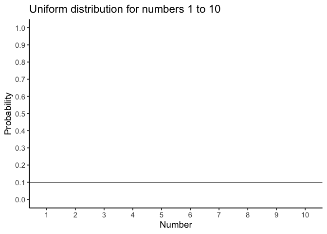
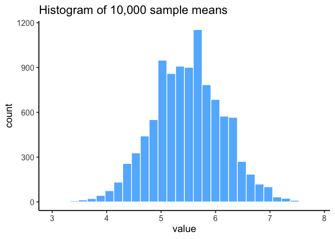
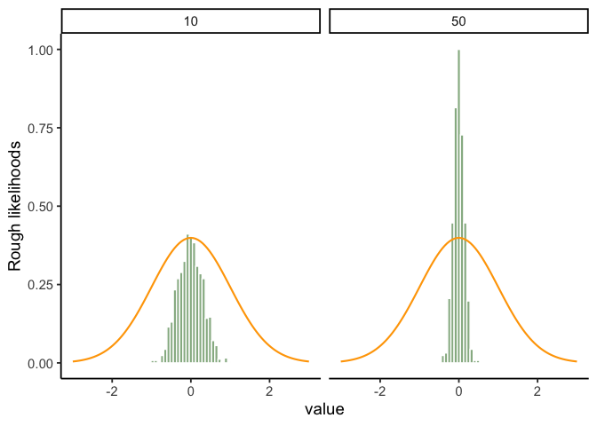
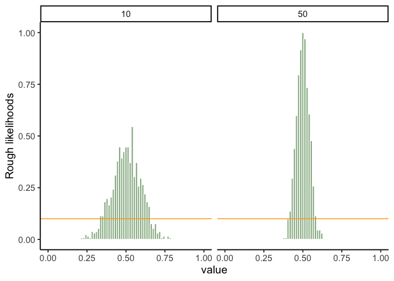
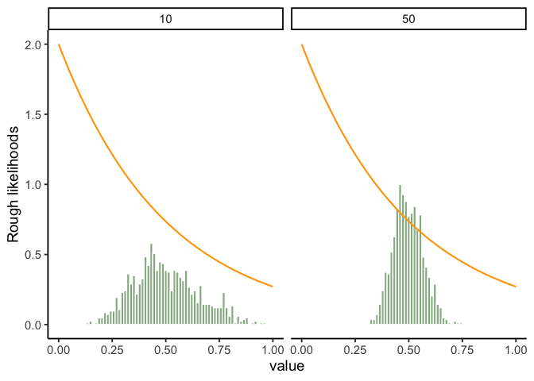
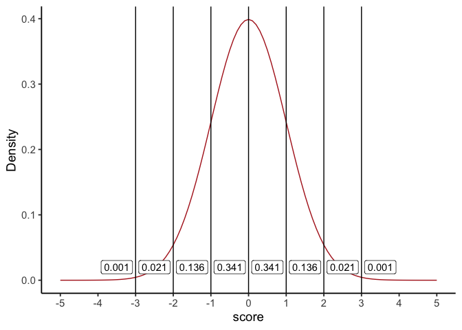
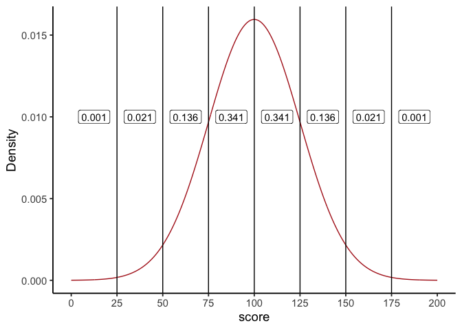
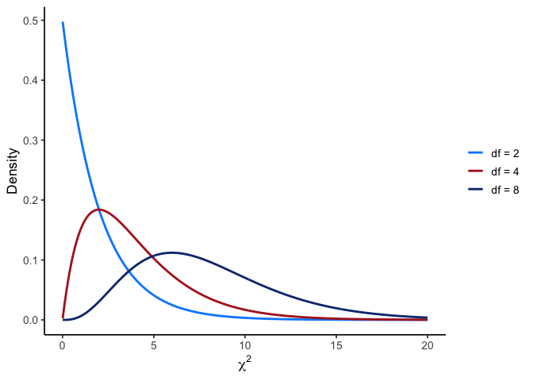

3 Probability and Distributions
I have studied many languages, French, Spanish, and a little Italian, but no one told me that Statistics was a foreign language.
Charmaine J. Forde
3.1 From description to inference
Up to this point, we’ve focused on experimental design and descriptive statistics: how to collect data and how to summarize it with graphs and averages. But statistics is more than description. It also lets us do inference, using limited data to say something about a broader population. Inference relies on two foundations: probability theory and the behavior of samples from distributions.
3.2 Probability vs. Statistics
Probability and statistics are closely related but not the same.
Probability starts with a known model of the world and asks: what kinds of data are likely?
- Example: What is the chance of flipping 10 heads in a row with a fair coin?
- Example: What is the chance of drawing five hearts from a shuffled deck?
Here, the model is known (fair coin, fair deck). Data are imagined.
Statistics starts with data and asks: what model of the world generated these data?
- Example: If a coin comes up heads 10 times in a row, is it fair?
- Example: If five cards in a row are hearts, was the deck shuffled?
Here, the data are known. The model is what we want to learn about.
NoteNote: The direction each one runs
Probability goes model → data.
Statistics goes data → model.
3.3 What does probability mean?
Statisticians agree on the rules of probability but not always on what the word itself means. In everyday life we’re comfortable saying something is “likely” or “unlikely,” but the formal meaning varies.
Imagine a soccer game between Arsenal and West Ham. You say Arsenal has an 80% chance of winning. That could mean:
Long-run frequency: if the teams played many times, Arsenal would win ~8 out of 10.
Betting odds: you’d only take a wager if payoffs reflected an 80/20 split.
Subjective belief: your confidence in Arsenal is four times stronger than in West Ham.
All three interpretations follow the same rules but reflect different philosophies.
For our purposes, the math works the same either way. In this course we’ll use the frequentist view, so you can think of probability as the long-run proportion of times an event would occur if you could repeat the process many times (that’s #1 above).
3.4 Basic probability theory
At the core of probability theory is the idea of a distribution: a set of possible outcomes and their probabilities.
Suppose we track which ice cream flavor a customer chooses: chocolate, vanilla, or strawberry. Each choice is an elementary event, and the set of all possible events is the sample space, \(S\):
\(S = \{\text{chocolate}, \text{vanilla}, \text{strawberry}\}\)
If we record how often each flavor is chosen, we might estimate the following probabilities:
Flavor Probability:
Chocolate \(P(\text{chocolate})=0.5\)
Vanilla \(P(\text{vanilla})=0.3\)
Strawberry \(P(\text{strawberry})=0.2\)
These probabilities form a distribution. Each value lies between 0 and 1, and together they sum to 1.
Non-elementary events
We can also define events that group multiple outcomes.
For example, let \(A=\) “not chocolate.” Then:
\[P(A) = P(\text{vanilla}) + P(\text{strawberry}) = 0.5\]
Expected value
Every probability distribution over numeric outcomes has its own mean, called the expected value. It answers a specific question: if you repeated the random process forever and averaged the results, what number would you converge on?
For a discrete random variable \(X\) with outcomes \(x_i\) and probabilities \(P(X=x_i)\), the expected value is a probability-weighted average:
\[\mu = E[X] = \sum_i x_i \, P(X=x_i)\]
Each outcome counts in proportion to how often it actually happens, not equally.
Worked example: a fair die. Roll a fair six-sided die. Each face, 1 through 6, is equally likely, \(P(X=x_i)=1/6\) for every face:
\[E[X] = (1)(1/6) + (2)(1/6) + (3)(1/6) + (4)(1/6) + (5)(1/6) + (6)(1/6) = 21/6 = 3.5\]
Notice that 3.5 is not itself a possible outcome. You can never roll a 3.5. The expected value is a long-run average across many rolls, not a prediction for any single one, the same distinction that applies to any mean.
Weight the outcomes unevenly and the expected value moves, even though the possible outcomes don’t change. Take a die manufactured with a defect: two faces show 2, and no face shows 3, so the faces are 1, 2, 2, 4, 5, 6. Five outcomes now carry probability \(1/6\) and one, landing on a 2, carries \(2/6\):
\[E[X] = (1)(1/6) + (2)(2/6) + (4)(1/6) + (5)(1/6) + (6)(1/6) = \frac{1+4+4+5+6}{6} = \frac{20}{6} \approx 3.33\]
Losing the 3 and doubling up on 2 pulls the expected value down from 3.5, exactly as it should: the distribution now leans toward the low end.
Expected value is not a one-off idea confined to this section. It’s what “unbiased” means later in this chapter, an estimator is unbiased when its expected value equals the true population parameter, and it reappears in Chapter 7, where a chi-square test’s “expected count” is this same probability-weighted logic, applied to counts instead of individual outcomes.
3.5 Two rules that matter later
Probability has a full set of formal rules for combining events, and an introductory probability course would work through all of them. This course needs exactly two, so those are the two we develop here. Everything else you can look up if you ever need it.
3.5.1 Conditional probability
A conditional probability is the probability of one thing given that something else has already happened. Conditioning narrows the field: instead of asking how likely an event is among all outcomes, you ask how likely it is among the outcomes where the condition already holds. A stream might exceed a nutrient threshold on 20% of all days, but on 60% of days following heavy rain. Same stream, different question, because the second one only counts rainy days.
This is the shape of every inference from here on. A \(p\)-value, which arrives in Chapter 4, is a conditional probability: the probability of data at least this extreme given that the null hypothesis is true.
3.5.2 Independence
Two events are independent when knowing that one occurred tells you nothing about whether the other did. Conditioning on one changes nothing about the other, so the conditional probability is just the ordinary one.
That gives us the rule we actually use. When two events are independent, the probability that both happen is the product of their separate probabilities:
\[P(\text{both}) = P(\text{first}) \times P(\text{second})\]
Two coin flips are independent: the first landing heads does not change the odds on the second. Two soil samples taken a meter apart usually are not, because nearby soil tends to be alike, so knowing one sample’s nitrogen content tells you something real about its neighbor’s.
Independence is the assumption every test in this book rests on, which Chapter 6 states once and then stops repeating. It also drives a result from Chapter 8: run \(m\) independent tests, each with its own 5% false-positive rate, and the chance of at least one false positive is \(1-(1-.05)^m\), which climbs fast. That is the multiplication rule applied \(m\) times.
3.6 Probability Distributions
A probability distribution is a rule that assigns probabilities to all possible outcomes of a random variable. Many distributions exist, but this book mostly uses five: Binomial, Normal, \(t\), \(\chi^2\) (“chi-square”), and \(F\). We’ll focus on Binomial and Normal here; the others appear when we do inference.
The binomial and the normal represent two kinds of distributions: discrete and continuous.
Discrete distributions assign probabilities to distinct outcomes.
Continuous distributions describe ranges of values, where probabilities are measured as areas under a curve.
3.6.1 The binomial distribution (discrete)
The binomial distribution models the number of “successes” in a fixed number of independent trials.
- A trial is a single attempt with two possible outcomes (success or failure).
- The success probability is the chance of success on any one trial, usually written as \(\theta\).
- The size parameter \(N\) is the number of trials.
- The random variable \(X\) is the number of successes observed in those \(N\) trials.
We write this as:
\(X \sim \text{Binomial}(N, \theta)\)
For example, if you flip a fair coin 20 times (\(N=20\), \(\theta=0.5\)), the binomial distribution tells you the probability of getting 0 heads, 1 head, 2 heads … all the way up to 20 heads. The bars of the distribution in Figure 3.2 show the probability of each outcome, and the total always sums to 1.

Two common queries
- Exact probability. For example, the chance of exactly 4 heads: \(P(X=4)\)
dbinom(x = 4, size = 20, prob = 0.5)
#> [1] 0.004620552The probability is about \(0.5\)%.
- Cumulative probability. For example, \(P(X \leq 4)\):
pbinom(q = 4, size = 20, prob = 0.5)
#> [1] 0.005908966The probability is about \(0.6\)%
The probability is slightly higher here, because it also includes the probability of getting 3, 2, 1, or 0 heads.
NoteNote: R’s distribution helpers
Every distribution in R comes with the same four:
- d* = exact probability (PDF)
- p* = cumulative probability \(P(X \le q)\)
- q* = quantile (inverse of p*)
- r* = random draws
For binomial: dbinom, pbinom, qbinom, rbinom. For discrete distributions, some percentiles don’t exist exactly; qbinom returns the smallest x with P(X x) p.
3.6.2 The normal distribution (continuous)
The normal distribution describes variables that can take on a wide range of values, clustered around a central point. The normal distribution is our most important distribution. It’s also sometimes called a Gaussian distribution or a bell curve.
- The mean \(\mu\) is the center of the distribution.
- The standard deviation \(\sigma\) measures spread: how tightly or widely values are clustered around the mean.
- The random variable \(X\) represents the outcome, which can be any real number.
We write this as:
\(X \sim \text{Normal}(\mu, \sigma)\)
It looks like Figure 3.3.

NoteNote: For continuous distributions
The probability of any single exact point is 0, so probability is always an area under the curve.
Changing \(\mu\) shifts the curve left/right; changing \(\sigma\) widens/narrows it (area always = 1).
For continuous distributions \(P(X = x) = 0\); instead, we compute \(P(a \le X \le b)\) as the area between \(a\) and \(b\).
See Figure 3.4 for an illustration.
This leads to a key property of the normal distribution (explored further in the Z-scores section):
68–95–99.7 rule:
~68% of values fall within 1σ of the mean
~95% fall within 2σ
~99.7% fall within 3σ

Two common queries
- Probability of being below a value, e.g. \(P(X \leq 1.64)\) for \(X \sim \text{Normal}(0,1)\)
pnorm(q = 1.64, mean = 0, sd = 1)
#> [1] 0.9494974In a normal distribution with a mean of 0 and standard deviation of 1, the probability the value is less than or equal to 1.64 is about 95%.
- Value for a percentile, e.g. the 97.5th percentile:
qnorm(p = 0.975, mean = 0, sd = 1)
#> [1] 1.959964Takeaway: For continuous variables, use areas (via pnorm/qnorm), not bar heights.
3.6.3 What’s probability density?
For continuous distributions like the normal, probabilities work differently than in the discrete case. You cannot ask for the probability of one exact value (e.g., \(P(X = 23)\)), because the answer is essentially zero. Instead, we calculate the probability of being in a range, such as \(22.5 \leq X \leq 23.5\).
This is why the \(y\)-axis of a normal curve is labelled probability density. The height of the curve at a point, \(p(x)\), is not itself a probability. Instead, probabilities come from the area under the curve between two values. For example, about 68% of values from a standard normal fall between −1 and 1, because the area between −1 and 1 is 0.68.
In R, functions like dnorm() return the density (the curve’s height), while pnorm() and qnorm() work with cumulative probabilities and quantiles, which are usually more useful for applied problems.
3.7 Summary of Probability
In this section we introduced the building blocks of probability, with an emphasis on the parts most relevant for statistics.
What probability means: We use the frequentist view, in which probability is the long-run proportion of times an event occurs.
Distributions: A probability distribution assigns probabilities to all possible outcomes of a random variable. For discrete variables (like coin flips), probabilities are attached to each outcome; for continuous variables (like exam scores), probabilities come from areas under a curve.
Rules of probability: this course needs two of them. Conditional probability is the form every \(p\)-value takes, and independence is the assumption underneath every test in this book, as well as the reason running many tests inflates the false-positive rate.
Key distributions:
- Binomial: counts successes across \(N\) independent trials.
- Normal: describes continuous outcomes centered at a mean, with spread determined by the standard deviation.
- Others (\(t\), \(\chi^2\), \(F\)) appear later when we turn to inference.
Takeaway: probability is what makes statistical inference possible. Once we know how outcomes behave under these distributions, we can ask whether a result is surprising enough to change what we believe.
3.8 Samples, populations and sampling
Descriptive statistics summarize what we do know. Inferential statistics aim to “learn what we do not know from what we do.” The central questions are: what do we want to learn about, and how do we learn it? Introductory statistics typically divides inference into two big ideas: estimation and hypothesis testing. This chapter introduces estimation, but first we need to cover sampling. Estimation only makes sense once you understand how samples relate to populations.
Sampling theory specifies the assumptions on which statistical inferences rest. To talk about making inferences, we must be clear about what we are drawing inferences from (the sample) and what we are drawing inferences about (the population).
In almost every study, what we actually have is a sample, a finite set of data points. We cannot survey every voter in a country or measure every tree in a forest. Earlier, our goal was just to describe the sample. Now we turn to how samples can be used to generalize.
3.8.1 Defining a population
A sample is tangible: it is the dataset you can open on your computer. A population, by contrast, is the (usually much larger) set of all possible individuals or observations you want to draw conclusions about. In an ideal world, researchers would start with a clear definition of the population of interest, since that shapes how a study is designed. In practice, the population is often only loosely defined. Still, the basic idea is simple: the sample should represent some broader population we care about.
3.8.2 Simple random samples
The sample–population relationship depends on the procedure used to select the sample. This is the sampling method, and it matters.
Suppose we have a bag with 10 chips, each uniquely labeled, some black and some white. This bag is the population. If we shake the bag and draw 4 chips without replacement, each chip has the same chance of being selected. This is a simple random sample.

Now imagine a different procedure: someone peeks inside and deliberately picks only black chips. That is a biased sample. The difference is critical. With a random sample, we can use statistical tools to generalize from the sample to the population; with a biased sample, we cannot.

Another variation is to draw chips with replacement, meaning each chip is returned to the bag before the next draw. In practice, most studies are “without replacement,” but much of statistical theory assumes replacement. When the population is large, the difference is negligible.

3.8.3 Random and non-random samples in practice
Random samples are the gold standard, and in many areas of environmental science they are common: inventory plots, transects, and monitoring networks are usually designed with probability-based methods. Still, many studies rely on modified approaches:
- Stratified sampling divides the population into subgroups (strata) and samples within each. This ensures representation of small but important groups, such as rare habitat types.
- Opportunistic or logistically constrained sampling selects cases that are accessible or already monitored. These are not random, but they are common in practice when budgets, terrain, or historical networks limit where data can be collected.
3.8.4 How much does it matter if you don’t have a random sample?
The short answer: it depends. Stratified sampling, while biased by design, is often useful and correctable with statistical adjustments. Opportunistic samples can be acceptable if the bias is unlikely to affect the phenomenon being studied. For example, if you want to study tree growth rates, sampling only trees on one side of a valley may or may not be problematic, depending on whether the valley side influences growth.
The key is to consider whether the way you sampled could plausibly distort the conclusions. When designing your own studies, aim for sampling methods that are as appropriate as possible for the population of interest. And when critiquing others, be specific about how a sampling choice might bias results, rather than simply noting that it is not random.
3.8.5 Population parameters and sample statistics
So far we have talked about populations the way a scientist might: a group of people, a stand of trees, a set of rivers. Statisticians formalize this idea by treating a population as a probability distribution, the abstract source from which data are drawn.
For example, suppose daily coffee consumption in adults follows an approximately normal distribution with mean \(\mu = 2\) cups/day and standard deviation \(\sigma = 1\) cup/day. These are the population parameters.

Now suppose we take a random sample of 100 adults. The histogram in panel (b) of Figure 3.8 shows that the sample resembles the population distribution, but not perfectly. The sample mean might be 1.9 cups and the sample standard deviation 1.1, close to the population values but not exactly equal to them.
These are sample statistics: numbers we calculate from the data in hand. They approximate the population parameters, which describe the entire distribution. The central problem of inference is how to use sample statistics to estimate population parameters, and how much confidence we can place in those estimates.
3.9 The law of large numbers
In the last section we compared a small sample of coffee drinkers (\(n=100\)) to a much larger sample (\(n=10{,}000\)). The difference was clear: the larger sample produced a histogram that looked much closer to the true population distribution. The sample mean and standard deviation were also much closer to the population values (\(\mu = 2\), \(\sigma = 1\) cups/day).
This illustrates the law of large numbers. Informally: larger samples give better information. More precisely, as the sample size grows, the sample mean \(\bar{x}\) converges toward the population mean \(\mu\). Symbolically:
\[n \to \infty \quad \Rightarrow \quad \bar{x} \to \mu\]
Although easiest to see with the mean, the law applies to many sample statistics: proportions, variances, correlations, and more.
The idea is obvious enough that Jacob Bernoulli, who first formalized it in 1713, remarked that “even the most stupid of men” already know it by instinct. His phrasing hasn’t aged well, but the insight remains correct: averaging over more observations reduces the “danger of wandering from one’s goal.”
In practice, any single sample statistic will be off the mark, but if we keep collecting data those statistics get closer to the true population parameters. This is one of the guarantees that makes statistical inference possible.
3.10 Sampling distributions and the central limit theorem
The law of large numbers tells us that with enough data, our sample mean will get close to the population mean. But in practice, we never have infinite data. What we need is a way to understand how the sample mean behaves with finite samples. This is where the sampling distribution of the sample means comes in.
3.10.1 Sampling distribution of the sample means
The phrase is clunky, but the idea is straightforward.
- A sample mean is just the average of one sample.
- A sampling distribution is what you get when you take many samples, compute the mean for each, and then look at the distribution of those means.
So the sampling distribution of the sample means is simply the distribution formed by repeating your study many times and collecting all those sample averages.
This is useful because it tells us how much the sample mean varies from sample to sample, and how close we can expect it to be to the population mean.
3.10.2 Seeing the pieces
We can build this step by step:
- Start with a distribution to sample from.
- Draw repeated random samples of the same size \(n\).
- Compute the mean of each sample.
- Plot those means in a histogram.
For example, suppose we draw numbers from a uniform distribution on 1 to 10: Figure 3.9.

Individual samples of size 20 look very different from each other, but their means cluster near 5.5 (the population mean).
If we repeat this thousands of times and plot all the sample means, we get a new distribution: the sampling distribution of the sample means. It is centered on 5.5, but spread out because of sampling variation.

We started with a uniform distribution, but Figure 3.10 does not look uniform at all. The histogram of sample means has its own shape and its own variability, and that fact leads directly to the central limit theorem.
3.10.3 Beyond the mean
Although we’ve focused on means, the same idea applies to any statistic: medians, standard deviations, maximum values, and so on. Each has its own sampling distribution, which describes how that statistic behaves across repeated samples. To illustrate, suppose we draw many samples of size \(n=50\) from a normal distribution with mean 100 and standard deviation 20. For each sample we compute the mean, standard deviation, maximum, and median, then plot the histograms of these values (Figure 3.11).
The sample mean is just the most important case, because it underpins much of classical inference.

3.11 The central limit theorem
So far, you’ve seen that sample means vary from one sample to the next, and that their variability shrinks as sample size grows. The sampling distribution of the mean is just the distribution you get if you compute the mean from many different samples of the same size.
Intuitively:
Small samples → sample means bounce around more → wide sampling distribution.
Large samples → sample means are more stable → narrow sampling distribution.
Figure 3.12 animates this idea. Each panel shows samples of size 10, 50, 100, or 1000 drawn from a normal distribution (orange line). Grey bars show the sample itself, the red line marks that sample’s mean, and the blue histogram shows the distribution of sample means across many repetitions. Notice how the blue distribution shrinks around the population mean as \(n\) increases.

So, the sampling distribution of the mean is itself a distribution, with its own variability. When the sample size is small, the distribution of sample means is wide; when the sample size is large, it is narrow. The standard deviation of this sampling distribution has a special name: the standard error (SE). In this context, it is the standard error of the mean. As you can see in the animation, as the sample size \(n\) increases, the SE decreases.
But there’s more. The central limit theorem tells us three powerful facts about the sampling distribution of the mean:
Its mean equals the population mean, \(\mu\).
Its standard deviation equals the population \(\sigma\) divided by \(\sqrt{n}\):
\[\text{SEM} = \frac{\sigma}{\sqrt{n}}\]
- Its shape approaches normal as \(n\) grows, no matter what the shape of the population is.
Together, these three facts form our practical version of the central limit theorem (CLT). The first fact says the sampling distribution is centered on \(\mu\), which is what it means to call \(\bar{x}\) unbiased, and it holds at every sample size, not just large ones. The second formalizes how the SE shrinks with larger \(n\). And the third shows why the normal curve appears so often: the distribution of sample means tends toward normality, even when the underlying data are skewed or flat.
The full CLT is mathematically more general and has a complicated proof, but for our purposes these three results capture what we need. To see the third point in action, let’s look at histograms of sample means drawn from different underlying distributions. Remember: these are distributions of sample means, not of individual observations.
In Figure 3.13, we are sampling from a normal distribution (orange line). The sampling distribution of the mean (green bars) is also normal.

Let’s try sampling from a uniform population: the parent distribution is flat (orange), but the sampling distribution of the mean is bell-shaped (Figure 3.14).

Sampling from an exponential population: the parent distribution is skewed, but the sampling distribution of the mean still looks normal (Figure 3.15).

Together, these results are the essence of the central limit theorem (CLT). Formally, if the population has mean \(\mu\) and standard deviation \(\sigma\), then the sampling distribution of the mean also has mean \(\mu\) and standard error
\[SE = \frac{\sigma}{\sqrt{n}}.\]
This formula shows how sample size controls reliability. As \(n\) increases, the denominator grows and the SE falls. The drop is not linear: doubling \(n\) cuts the SE by only about 30%, which is why the benefits of ever-larger samples taper off. Larger samples still produce more stable estimates of \(\mu\).
The CLT also explains why the normal curve appears so often in practice. Whenever you average across many influences, whether exam scores or crop yields or daily temperatures, the distribution of those averages tends to be normal.
3.12 z-scores
A z-score is a standardized way to express how far a value is from its mean, measured in units of standard deviation. Z-scores are useful because (i) areas under the normal curve translate directly into probabilities, and (ii) by the CLT, many averages (e.g., sample means) are approximately normal, so z-scores let us read off probabilities for those, too.
First, recall the geometry of the normal curve. In Figure 3.16 we draw vertical lines at 0, ±1, ±2, and ±3 standard deviations for a standard normal (\(\mu=0,\sigma=1\)). The labels show familiar areas: about 34.1% between 0 and 1, 13.6% between 1 and 2, and so on. Altogether, about 68.2% of values lie between −1 and +1 SD.

Those same proportions hold for any normal distribution, regardless of its mean or SD. In Figure 3.17 (with \(\mu=100,\ \sigma=25\)), the region from 100 to 125 (one SD above the mean) still contains about 34.1% of values.

3.12.1 What “standardized” means
Standardizing converts raw scores to z-scores by subtracting the mean and dividing by the standard deviation:
\(z=\frac{x-\mu}{\sigma}\)
Interpretation is immediate:
\(z=0\) is the mean
\(z=1\) is one SD above the mean
\(z=-2\) is two SDs below the mean
Because z-scores put everything on the same scale, you can compare values across different normal variables (or read probabilities from the standard normal). And by the CLT, you can do the same with sample means when \(n\) is modestly large.
3.12.2 Calculating z-scores
If the population mean and SD are known, use them in the formula. In practice they’re often unknown, so we standardize with the sample mean \(\bar{x}\) and sample SD \(s\) as estimates.
Example: generate ten observations from a \(N(100, 25^2)\) distribution, then standardize:
| Observation | Score |
|---|---|
| 1 | 63.39 |
| 2 | 134.69 |
| 3 | 120.94 |
| 4 | 86.01 |
| 5 | 83.15 |
| 6 | 133.42 |
| 7 | 101.63 |
| 8 | 93.91 |
| 9 | 111.30 |
| 10 | 102.10 |
Using the known population values:
\((scores - 100)/25\)
| Observation | Score | Zscore |
|---|---|---|
| 1 | 63.39 | -1.46 |
| 2 | 134.69 | 1.39 |
| 3 | 120.94 | 0.84 |
| 4 | 86.01 | -0.56 |
| 5 | 83.15 | -0.67 |
| 6 | 133.42 | 1.34 |
| 7 | 101.63 | 0.07 |
| 8 | 93.91 | -0.24 |
| 9 | 111.30 | 0.45 |
| 10 | 102.10 | 0.08 |
Once standardized, areas under the normal curve tell you how unusual a score is. z between −1 and 1 is common (~68% of cases), between 1 and 2 is less common (~13.6% on each side), and beyond ±2 is relatively rare (~2.1% in each tail segment between 2 and 3, even less beyond 3).
Finally, z-scores are also called standardized scores because they express distance from the mean in SD units.
3.13 The chi-square distribution
Not every named distribution is symmetric like the normal. The chi-square (\(\chi^2\)) distribution is another shape you’ll see repeatedly once we get to hypothesis testing, particularly for categorical data, where the question isn’t “how far is this mean from that one?” but “how far are these observed counts from what we’d expect?”

Two things make chi-square look different from the normal shapes above. First, a chi-square statistic is built from squared deviations between observed and expected counts, so it can never be negative: the distribution starts at 0 and has no left tail at all. Second, its exact shape depends on degrees of freedom: with few df it’s sharply right-skewed (most of the probability mass sits near 0, with a long tail to the right), and as df grows it stretches rightward and becomes more symmetric.
This also means chi-square tests are naturally one-tailed: because deviations in either direction from expected get squared before being added up, only large positive values of the statistic are ever “surprising.” There’s no equivalent of a negative \(z\)-value to worry about.
You’ll put this distribution to work later for the chi-square goodness-of-fit and test-of-independence, once you have the hypothesis-testing framework (Chapter 4) to build a decision around it.
3.14 Estimating population parameters
3.14.1 Why estimate? (two quick motivations)
Concrete: A bootmaker wants the mean and spread of adult foot lengths to plan inventory. Measuring everyone is impossible; a well-designed sample can estimate those parameters closely enough to act on.
Abstract: In experiments, we often ask whether a manipulation changes a response. Even if the broader “population” is fuzzy, we still estimate the mean response and its variability under each condition to compare them.
3.14.2 Sample statistic vs. estimate
A statistic describes your data; an estimate is your best guess about the corresponding population parameter. For the mean, these coincide:
| Symbol | What is it? | Do we know it? |
|---|---|---|
| \(\bar{x}\) | Sample mean | Yes, calculated from the raw data |
| \(\mu\) | True population mean | Almost never known for sure |
| \(\hat{\mu}\) | Estimate of the population mean | Yes, for simple random samples \(\hat\mu=\bar x\) |
3.14.3 Estimating the population standard deviation
Estimating the population mean was straightforward: the sample mean \(\bar x\) is an unbiased estimator of \(\mu\), meaning that across many samples it lands on the true mean on average. Standard deviation is trickier.
Here we encounter bias. An estimator is biased if its expected value systematically differs from the true population parameter. The sample standard deviation \(sd\) is such a case: it tends to underestimate \(\sigma\), especially when \(n\) is small.
Chapter 2 built the standard deviation dividing by \(N\) and noted in passing that R divides by \(n-1\) instead. That difference is what we can now explain.
3.14.4 Simulating bias
We can see this by creating a sampling distribution of the standard deviation. Suppose the true population IQ distribution has mean 100 and standard deviation 15. If we repeatedly draw small samples (say, \(n=2\)) and compute \(s\) each time, the histogram of those \(s\) values looks like Figure 3.19.

Even though the true \(\sigma\) is 15, the average sample SD is only about 8.5. This is very different from the sampling distribution of the mean, which is centered on \(\mu\).
If we repeat the simulation for a range of sample sizes, the contrast is clear:
Figure 3.20 shows that the sample mean stays centered on \(\mu\) (unbiased).
Figure 3.21 shows that the sample SD underestimates \(\sigma\) when \(n\) is small, though the bias shrinks as \(n\) grows.

Figure 3.21 shows the sample standard deviation as a function of sample size. Unlike the mean, the sample standard deviation does not center on the population value. Small samples especially understate variability.

3.14.5 Why variance needs a small correction
We just saw that the sample standard deviation is biased. Here is why, and why the fix takes the particular form it does.
Why does this happen?
Picture a tiny sample of \(n=3\) values. The sample mean \(\bar{x}\) might land close to the true population mean \(\mu\), or it might land far away, and we don’t know in advance which. But \(\bar{x}\) is always computed from those three sample points, which pulls it toward the middle of those specific points. As a result, distances from the sample points to \(\bar{x}\) tend to be a little shorter, on average, than distances from those same points to the true \(\mu\) would be.
Since variance and SD are built from squared distances to the mean, this shrinkage carries through: the sample variance computed the “obvious” way (divide by \(n\)) is biased small, and the sample SD inherits that bias.
The fix is to divide by \(n-1\) instead of \(n\). Writing it out, the naive sample variance is
\[s_n^2 = \frac{1}{n}\sum_{i=1}^n (x_i - \bar{x})^2,\]
and it systematically underestimates \(\sigma^2\), the population variance. The corrected version divides by \(n - 1\) instead:
\[s_{n-1}^2 = \frac{1}{n-1}\sum_{i=1}^n (x_i - \bar{x})^2.\]
This \(s_{n-1}^2\) is an unbiased estimator of \(\sigma^2\), so averaged across many samples it lands right on the true population variance. Take the square root of either formula to get back to an SD. One small wrinkle: because square roots aren’t linear, even the corrected \(s_{n-1}\) is technically still very slightly biased for \(\sigma\). In practice that residual bias is tiny and shrinks as \(n\) grows, which is why \(s_{n-1}\) is the standard choice for a sample SD.
A note on notation. The subscripts on \(s_n^2\) and \(s_{n-1}^2\) exist only so we can contrast the two formulas here. Everywhere else in this book, and in most other writing you will encounter, plain \(s^2\) means the corrected version that divides by \(n-1\), and plain \(s\) is its square root, the sample standard deviation. That is also what R’s sd() and var() return. When you see \(s\) in the \(t\)-test formulas in Chapter 6 and after, it is this quantity.
Seeing the bias.
Let’s make this concrete. Suppose our full population is every even number from 80 to 120, with true mean \(\mu = 100\), marked in red in Figure 3.22.

Now let’s draw three separate samples of \(n=3\) from that population, each on its own number line. The light blue point is the sample mean \(\bar{x}\); the three filled blue points are the sampled values. On the right of each panel:
- uncorrected \(s\) (divide by \(n\)): the naive sample SD,
- corrected \(s\) (divide by \(n-1\)): the conventional sample SD,
- \(\sigma\): the true population SD, about 12.1.

In Example A, the sample mean lands close to \(\mu\), but the three points sit close together. \(\sigma\) is about 12.1, uncorrected \(s\) is 3.4, corrected \(s\) is 4.2. Both versions undershoot \(\sigma\) badly, but the correction helps.

In Example B, the sample mean lands farther from \(\mu\), but the points are still tight together. \(\sigma\) is about 12.1, uncorrected \(s\) is 2.5, corrected \(s\) is 3.1, the same story.

In Example C, the sample mean lands close to \(\mu\) again, but this time the three points happen to be spread wide. \(\sigma\) is about 12.1, uncorrected \(s\) is 14.1, corrected \(s\) is 17.2. Here \(s\) overshoots \(\sigma\) instead.
So sometimes \(s\) undershoots and sometimes it overshoots. Why call it “biased small,” then? Because outcomes like A and B (tight, unrepresentative samples) happen more often than outcomes like C. Average over enough samples, and the sample SD comes in low more often than it comes in high. Let’s check that by simulating 8,000 samples, shown in Figure 3.26. The simulation draws from a normal population with the same \(\mu = 100\) and \(\sigma = 12.11\) as the number line above, rather than from the 21 even numbers themselves, so the histograms come out smooth enough to read. The bias is a general property of the sample SD, not a quirk of one particular population.
![A 2 by 2 grid of histograms: rows show the uncorrected sample SD (divide by n) versus the corrected sample SD (divide by n minus 1), and columns show sample sizes of 3 and 30, each built from 8000 simulated samples. A dashed red line in every panel marks the true population SD of 12.11, and a solid blue line marks the average sample SD for that panel. At n = 3, the blue line sits noticeably left of the red line in both rows, more so in the top row; at n = 30, the blue and red lines are nearly on top of each other in both rows.](03-SamplesPopulations_files/figure-html/fig-sdbias-simulation-1.png)
Each panel is a histogram of 8,000 sample SDs. The red dashed line marks the true \(\sigma = 12.11\); the blue solid line marks the average sample SD across all 8,000 simulations.
Two things to notice. First, compare the top row (divide by \(n\)) to the bottom row (divide by \(n-1\)): the blue line sits closer to the red line in the bottom row, confirming the correction helps. Second, compare the columns: at \(n=30\) the bias is much smaller than at \(n=3\), in both rows. The \(n-1\) correction matters most for small samples, and becomes negligible as sample size grows, exactly the pattern we’d expect if bigger samples give us better estimates.
Key points to remember.
- The sample mean is unbiased for \(\mu\), so no correction is needed.
- The naive sample SD (divide by \(n\)) tends to underestimate \(\sigma\).
- Dividing by \(n-1\) instead makes the variance unbiased, removes nearly all of the bias in the SD, and is the standard choice for sample data.
- The correction matters most for small \(n\), and fades as \(n\) grows.
- On an exam, if you’re asked for “the sample standard deviation,” use the \(n-1\) version unless told otherwise. R’s
sd()function already does this for you.
NoteNote: Connecting back to earlier ideas
Two ideas from earlier in this chapter bear directly on what we just saw:
- Law of large numbers: as \(n\) grows, both \(\bar{x}\) and \(s\) converge on their population values, exactly the pattern in Figure 3.26.
- Central limit theorem: the CLT describes the sampling distribution of the mean, not the standard deviation. The histograms above look bell-shaped, but we cannot assume sample SDs are normal at any \(n\).
To summarize:
| Symbol | Definition | Known? |
|---|---|---|
| \(s^2\) | Sample variance (divide by \(n-1\)), and \(s\) its square root, the sample SD | Yes, calculated directly from data |
| \(s_n^2\) | The naive sample variance (divide by \(n\)), biased small; used above only to show why the correction is needed | Yes, but not what we report |
| \(\sigma^2\) | Population variance, with \(\sigma\) the population SD | No, almost never known exactly |
3.15 Estimating a confidence interval
Statistics means never having to say you’re certain.
Unknown origin
So far, we’ve focused on using sample data to estimate population parameters, but every estimate comes with some uncertainty. A single number, like “the mean IQ is 115,” doesn’t capture how confident we are. What we want is a range that likely contains the true population mean. That range is called a confidence interval (CI).
You’ll use this directly in Chapter 4, where a confidence interval becomes one of three equivalent ways to decide whether to reject \(H_0\). For now, let’s see where it comes from.
The Idea
Thanks to the central limit theorem, we know the sampling distribution of the mean is approximately normal. In a normal distribution, 95% of values fall within about 1.96 standard deviations of the mean.
If we knew the population mean and SD (\(\mu\), \(\sigma\)), the central limit theorem tells us where sample means tend to fall: a sample mean \(\bar x\) is usually within about 1.96 standard errors of \(\mu\), where
\(\text{SEM}=\frac{\sigma}{\sqrt{n}}\)
That’s the forward view (model → data).
In practice we want the reverse (data → model): given an observed \(\bar x\), what can we say about \(\mu\)? Rearranging the same inequality gives
\[\bar{x} - 1.96\,\frac{\sigma}{\sqrt{n}} \le \mu \le \bar{x} + 1.96\,\frac{\sigma}{\sqrt{n}}\]
so the 95% confidence interval is
\[CI_{95} = \bar{x} \pm 1.96\,\frac{\sigma}{\sqrt{n}}\]
The constant 1.96 is the normal cutoff for 95%. For other levels use the corresponding normal quantile, for example 1.04 for 70%.
The catch
There’s one snag: this formula assumes we know the population standard deviation \(\sigma\). But in practice, \(\sigma\) is almost never known. We estimate it with \(\hat\sigma\), which introduces extra uncertainty.
To account for this, we swap the normal cutoffs for those from the \(t\)-distribution, which depends on sample size. With small \(n\), the \(t\) values are larger, so the CI widens. As \(n\) grows, \(t\) values shrink toward 1.96, and the \(t\)-based CI becomes indistinguishable from the normal version.
TipTip: Rule of thumb
Larger \(n\) → smaller SE → narrower CI.
Why it matters
Confidence intervals tell us how precise our guess is, and they force us to acknowledge uncertainty. A wide interval tells us we don’t have much precision; a narrow one suggests greater precision.
3.16 Chapter Summary
Why it matters. Every inference you make for the rest of the course rests on one move: reasoning from a sample you have to a population you don’t. This chapter builds the machinery that makes that move legitimate, and explains why it works even when your data are not normal.
Core ideas
- Probability runs model → data; statistics runs data → model. Probability starts from a known process and predicts what data it produces. Statistics starts from observed data and reasons backward to the process. The rest of the book is the second direction.
- A population is a distribution, not just a group. Treating the population as a probability distribution is what lets us say anything precise about how samples behave.
- Law of large numbers. As \(n\) grows, a sample statistic settles onto the population value. This is why bigger samples give more reliable estimates.
- Sampling distributions are the key abstraction. Any statistic computed over repeated samples has its own distribution. The sampling distribution of the mean is the one that matters most, and its spread is the standard error, \(\sigma/\sqrt{n}\).
- The central limit theorem. The sampling distribution of the mean centers on \(\mu\), narrows as \(n\) grows, and approaches normal regardless of the population’s shape. That last clause is what lets normal-based methods work on data that are not themselves normal.
- Not every estimator is unbiased. The sample mean lands on \(\mu\) on average, but the sample SD systematically underestimates \(\sigma\). Dividing by \(n-1\) corrects it, and the correction matters most when \(n\) is small.
- Confidence intervals express uncertainty. Rather than reporting a single estimate, a CI reports the range of population values the data are consistent with.